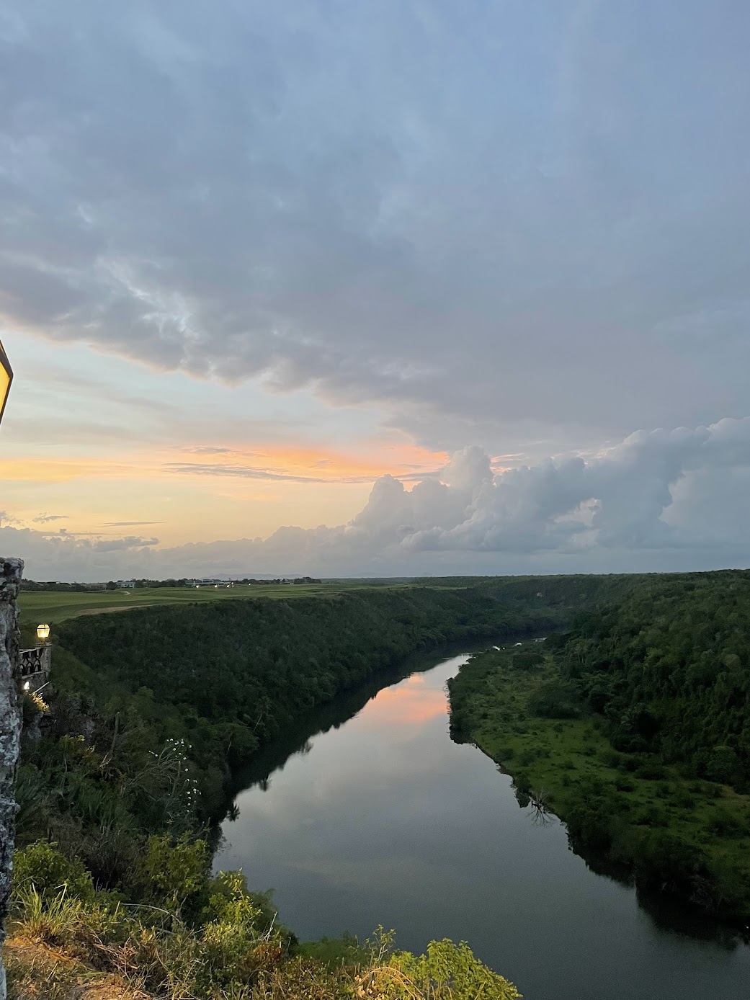

My name is Ava and I am a sophmore here at Elon. I am originally from Olney, MD. I am apart of the sorority Tri Delta here on campus. When I am not involved with that I love hanging out with my friends and my boyfriend, Vince. This summer Vince and I went to the Dominican Republic, it was so beautiful!
Currently I am working at Pandoras Pies as a hostess which is a resteraunt here on campus. This summer I worked as a waitress at a local country club.
My family consists of my Mom, Dad, and sister Gabbi. I love them all very much. I am also lucky to live with all of my best friends here on campus, Zoe, Kylie, Tory, Emma, Lucy and Paige!

Contact Me:
240-506-0693
acasaus@elon.edu